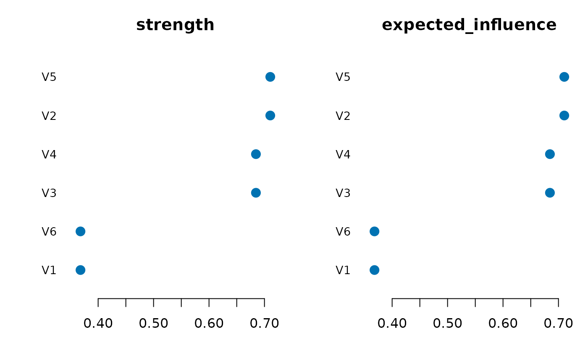
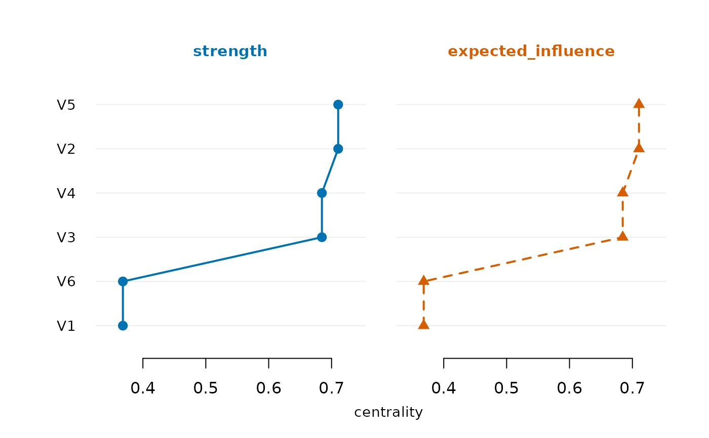

Summarizes each node's position in a fitted network as a tidy table. For
psychometric networks the recommended measures are strength (the sum of
absolute edge weights) and expected influence (the signed sum, so negative
edges offset positive ones; Robinaugh, Millner & McNally 2016). Betweenness
and closeness follow Opsahl, Agneessens and Skvoretz (2010) on the
inverted absolute weights. For a directed network (e.g. relimp_network())
strength and expected influence sum the outgoing edges.
Arguments
- x
A psychnet object or a weighted adjacency matrix. For
plot(), thepsychnet_centralitytable returned bynet_centralities().- measures
Character vector of measures to return (for
plot(): which of the returned measure columns to draw; default all). Any of"strength","expected_influence"(the defaults, recommended for psychometric networks),"expected_influence_2step"(a node's one-step expected influence plus the one-step expected influence it transmits through its neighbours),"betweenness","closeness", plus any names supplied viacentrality_fn. Betweenness and closeness are computed on the absolute, inverted-weight graph and are not generally meaningful on signed networks – request them only when a downstream comparison needs them.- centrality_fn
Optional function taking the weighted adjacency matrix (with node-label dimnames) and returning a named list of node-centrality vectors, used to supply any
measuresnot built in. Each vector must have one numeric value per node. A named vector is aligned to the nodes by label (its names must be exactly the node labels, in any order); an unnamed vector is taken in node order. A wrong length, missing or extra names, or a non-numeric value is an error of classpsychnet_bad_input.- ...
Unused.
- type
For
plot():"bar"(default; one sorted lollipop panel per measure) or"line"(the qgraph/bootnet centrality plot: one panel per measure, nodes on a shared vertical axis).- scale
For
plot(type = "line"): the per-measure transform,"raw"(default; each panel keeps its own axis),"z"(z-score per measure) or"relative"(min-max scaled to [0, 1]).type = "bar"always shows raw values.
Value
A tidy data.frame of class c("psychnet_centrality", "data.frame"), one row per node, with a node column and one column per
requested measure (strength = sum of absolute edge weights,
expected_influence = sum of signed edge weights, by default;
betweenness and closeness are normalized, see Details); plot()
draws it and returns it invisibly. For a psychnet_group the result is a
per-group list (see psychnet_result_group).
Details
Scaling of betweenness and closeness. Both are normalized, as igraph's
betweenness(normalized = TRUE) / closeness(normalized = TRUE):
betweenness is divided by the number of node pairs not involving the node,
(p - 1)(p - 2) / 2, and closeness is the number of reachable nodes over
the sum of distances to them (the inverse mean distance). They therefore
differ from qgraph::centrality_auto(), which reports raw betweenness
(path counts) and closeness as 1 / sum(distances).
Functions
plot(psychnet_centrality): One panel per measure (seetype,scale). Raisespsychnet_bad_inputfor ameasuresentry that is not a measure column, skips a column with no finite value with apsychnet_plot_skippedwarning, and errors (psychnet_nothing_to_plot) when none has one.
References
Robinaugh, D. J., Millner, A. J., & McNally, R. J. (2016). Identifying highly influential nodes in the complicated grief network. Journal of Abnormal Psychology, 125(6), 747-757. doi:10.1037/abn0000181
Opsahl, T., Agneessens, F., & Skvoretz, J. (2010). Node centrality in weighted networks: Generalizing degree and shortest paths. Social Networks, 32(3), 245-251. doi:10.1016/j.socnet.2010.03.006
Examples
S <- 0.4^abs(outer(1:6, 1:6, "-"))
cent <- net_centralities(ebic_glasso(cor_matrix = S, n = 250))
cent
#> node strength expected_influence
#> 1 V1 0.3681824 0.3681824
#> 2 V2 0.7105013 0.7105013
#> 3 V3 0.6846378 0.6846378
#> 4 V4 0.6846378 0.6846378
#> 5 V5 0.7105013 0.7105013
#> 6 V6 0.3681824 0.3681824
plot(cent)

plot(cent, type = "line")
